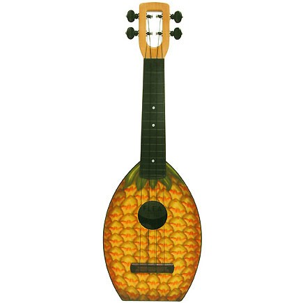
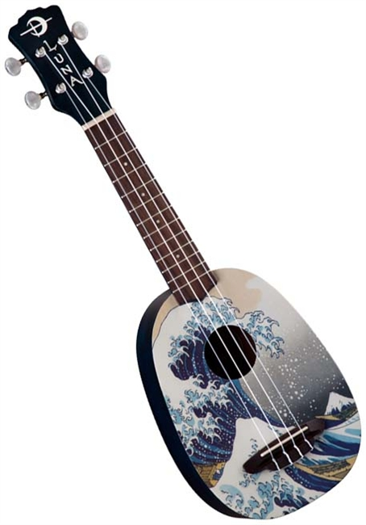
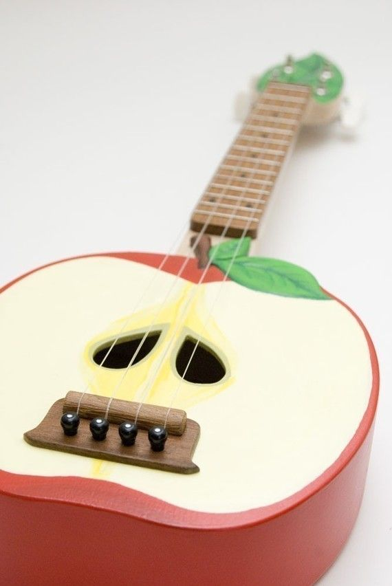
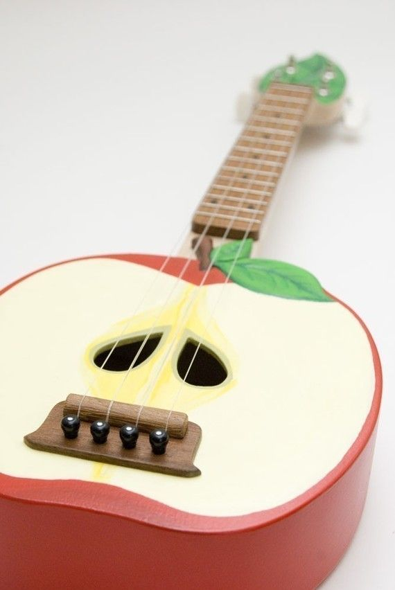
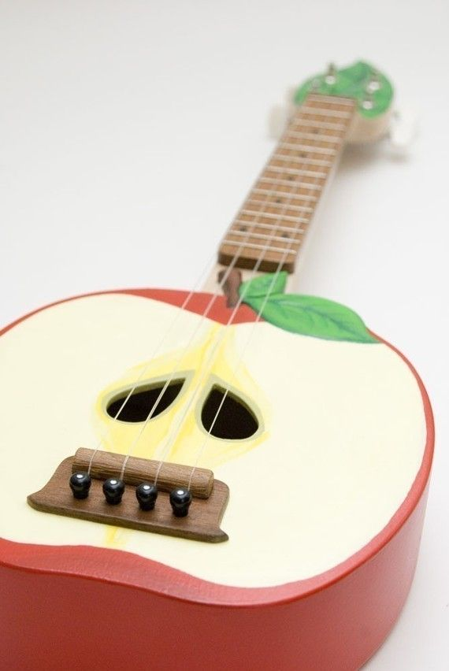

ברוכים הבאים!
היוקוללה הוא כלי מיתר קטן, דמוי גיטרה, לרוב בעל 4 מיתרים, שמוצאו מהוואי. הכלי הופיע לראשונה בסוף המאה ה-19 וזכה לפופולאריות רבה בשנות ה-20 וה-30 של המאה ה-20. מאז ועד היום זוכה היוקוללה לתקופות של עדנה מחודשת (לצד תקופות של שכחה מוחלטת). נראה שבעשור האחרון הוא נמצא שוב בעלייה.
אתר זה נועד לספק מידע על היוקוללה עבור נגנים או סתם אנשים תמהונים שאוהבים להתבונן בתמונות של הכלי הקטן ולקרוא עליו. תהנו!

-
- 28.5.2018
-
- 2.6.2018
-
- 5.6.2018
-
- 12.6.2018
עדכונים:



 




אוהבים לבהות ביוקולליים? איזה מוזרים אתם! מוזמנים להיכנס לגלריה.
פינת היוטיוב השבועי:
אחד מנגני היוקוללה המחוספסים ביותר שהיו אי פעם (והתחרות לא קשה בכלל!) בביצוע מחוספס וצורם כהלכה לנירוונה.
מומלץ לבדוק את ערוץ היוטיוב שלו המוקדש כולו לביצועים נוספים מאותו הסגנון.